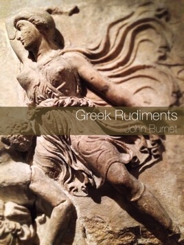

00075
publishing
-
itunes producer
- itunes producer will not accept picture sizes at original resolution. need to create 1400px width image especially for the cover included in the epub
-
use svg for diagrams
- in epub code
-
- example script from Greek philosophy
- in epub code
-
bugs
- epubcheck has bug where it cannot cope with lower case I gamma in heading, so replaced with smallcaps I.
- numbers that start a paragraph must be of form (6) to work with pandoc
-
wealth, virtual wealth, and debt
- Canada epub
Link: showbook.php?pid=20140873
- Canada epub
-
biophysical economics
http://www.eoearth.org/view/article/150665/
Link: 150665 -
legal deposit
- BRITISH LIBRARY legal-deposit-books@bl.uk Dear Maki, We would be pleased to accept a copy of the item mentioned. There is no need to use a reference number. Simply post us one copy with a short covering note or compliment slip giving your postal address so that we can send you a receipt. The address to post it to is- Legal Deposit Office The British Library Boston Spa Wetherby West Yorkshire LS23 7BY Kind regards, Dominica Taylor Legal Deposit Monographs — AGENCY FOR LEGAL DEPOSIT LIBRARIES publisherenquiries@legaldeposit.org.uk Tel: 0131 623 4680 Dear Sir/Madam, Thank you for your enquiry regarding deposit of new titles. We would require you to send 5 copies of each title enclosing a compliment slip with up to date address details. We will then forward your publication onto Bodleian Library Oxford University, Cambridge University Library, National Library of Scotland, National Library of Wales and Trinity College Dublin in accordance with the Legal Deposit Libraries Act 2003. All items should be deposited to our address at Agency for the Legal Deposit Libraries, 161 Causewayside, Edinburgh, EH9 1PH. Yours Sincerely Karen Pender Administrator The Agency for the Legal Deposit Libraries
-
open book publishers
- http://cambridge.academia.edu/AlessandraTosi
-
register vat eu necessary
- https://www.gov.uk/vat-registration/registering-vat-other-eu-countries
-
Die Fragmente der Vorsokratiker
Link: Hermann_Alexander_Diels#Die_Fragmente_der_Vorsokratiker

osmium Os (ὀσμή osme, smell)
writing
-
elmore Leonard rules of writing
-
“Never open a book with weather.
If it’s only to create atmosphere, and not a character’s reaction to the weather, you don’t want to go on too long. The reader is apt to leaf ahead looking for people. There are exceptions. If you happen to be Barry Lopez, who has more ways to describe ice and snow than an Eskimo, you can do all the weather reporting you want.Avoid prologues.
They can be annoying, especially a prologue following an introduction that comes after a foreword. But these are ordinarily found in nonfiction. A prologue in a novel is backstory, and you can drop it in anywhere you want.There is a prologue in John Steinbeck’s Sweet Thursday, but it’s O.K. because a character in the book makes the point of what my rules are all about. He says: “I like a lot of talk in a book and I don’t like to have nobody tell me what the guy that’s talking looks like. I want to figure out what he looks like from the way he talks. . . . figure out what the guy’s thinking from what he says. I like some description but not too much of that. . . . Sometimes I want a book to break loose with a bunch of hooptedoodle. . . . Spin up some pretty words maybe or sing a little song with language. That’s nice. But I wish it was set aside so I don’t have to read it. I don’t want hooptedoodle to get mixed up with the story.”
Never use a verb other than “said” to carry dialogue.
The line of dialogue belongs to the character; the verb is the writer sticking his nose in. But said is far less intrusive than grumbled, gasped, cautioned, lied. I once noticed Mary McCarthy ending a line of dialogue with “she asseverated,” and had to stop reading to get the dictionary.Never use an adverb to modify the verb “said” …
…he admonished gravely. To use an adverb this way (or almost any way) is a mortal sin. The writer is now exposing himself in earnest, using a word that distracts and can interrupt the rhythm of the exchange. I have a character in one of my books tell how she used to write historical romances “full of rape and adverbs.”Keep your exclamation points under control.
You are allowed no more than two or three per 100,000 words of prose. If you have the knack of playing with exclaimers the way Tom Wolfe does, you can throw them in by the handful.Never use the words “suddenly” or “all hell broke loose.”
This rule doesn’t require an explanation. I have noticed that writers who use “suddenly” tend to exercise less control in the application of exclamation points.Use regional dialect, patois, sparingly.
Once you start spelling words in dialogue phonetically and loading the page with apostrophes, you won’t be able to stop. Notice the way Annie Proulx captures the flavor of Wyoming voices in her book of short stories Close Range.Avoid detailed descriptions of characters.
Which Steinbeck covered. In Ernest Hemingway’s Hills Like White Elephants what do the “American and the girl with him” look like? “She had taken off her hat and put it on the table.” That’s the only reference to a physical description in the story, and yet we see the couple and know them by their tones of voice, with not one adverb in sight.Don’t go into great detail describing places and things.
Unless you’re Margaret Atwood and can paint scenes with language or write landscapes in the style of Jim Harrison. But even if you’re good at it, you don’t want descriptions that bring the action, the flow of the story, to a standstill.And finally:
Try to leave out the part that readers tend to skip.
A rule that came to mind in 1983. Think of what you skip reading a novel: thick paragraphs of prose you can see have too many words in them. What the writer is doing, he’s writing, perpetrating hooptedoodle, perhaps taking another shot at the weather, or has gone into the character’s head, and the reader either knows what the guy’s thinking or doesn’t care. I’ll bet you don’t skip dialogue.My most important rule is one that sums up the 10.
If it sounds like writing, I rewrite it.
Or, if proper usage gets in the way, it may have to go. I can’t allow what we learned in English composition to disrupt the sound and rhythm of the narrative. It’s my attempt to remain invisible, not distract the reader from the story with obvious writing. (Joseph Conrad said something about words getting in the way of what you want to say.)
If I write in scenes and always from the point of view of a particular character — the one whose view best brings the scene to life — I’m able to concentrate on the voices of the characters telling you who they are and how they feel about what they see and what’s going on, and I’m nowhere in sight.
What Steinbeck did in Sweet Thursday was title his chapters as an indication, though obscure, of what they cover. “Whom the Gods Love They Drive Nuts” is one, “Lousy Wednesday” another. The third chapter is titled “Hooptedoodle 1″ and the 38th chapter “Hooptedoodle 2″ as warnings to the reader, as if Steinbeck is saying: “Here’s where you’ll see me taking flights of fancy with my writing, and it won’t get in the way of the story. Skip them if you want.”
Sweet Thursday came out in 1954, when I was just beginning to be published, and I’ve never forgotten that prologue.
Did I read the hooptedoodle chapters? Every word.”
-
-
commentary rules
- set the scene
- describe the action
- give the score or results, regularly and succinctly
- explain, without interrupting, the stadium’s reaction to the game’s event
- share “homework,” such as historical facts and figures or personal information; and
- assess the significance of the occasion and key moments.
shizuku
- writing and reading books
- mechanical pencil
GE
john burnet
1863–1928
Link: John_Burnet_%28classicist%29
early greek philosophy
fifth edition 2010

Link: Early_Greek_Philosophy
-
2015 epub
also available on ibooks and kindle e.g. us, ukLink: 20100429earlygreekphilosophy.epub
- how could I forget? I was looking for information on herakleitos and thus found burnet’s early greek philosophy. which led to his other works.
-
the first edition with searchable greek text —manually typed and corrected; footnotes and page references manually converted to endnotes and section references
-
isbn978-1-84874-004-4
_greek philosophy:
thales to plato_
second edition 2010
Link: Greek_philosophy
-
the first edition with searchable greek text —manually typed and corrected; footnotes and page references manually converted to endnotes and section references
-
isbn978-1-84874-008-2
greek rudiments
second edition 2014

Link: Greek_rudiments
-
the first edition with searchable greek text —manually typed and corrected; footnotes and page references manually converted to endnotes and section references
-
isbn978-1-84874-018-1
_maki lam,
aya hayashi_
1976–
_love and trust and
somesuch spells;
the rising power of
responsible people_
2010
Link: Love_and_trust_and_somesuch_spells
-
2015 epub
also available on ibooks and kindle e.g. uk, usLink: 20120112somesuch.epub
-
isbn978-1-84874-000-6
scroll, shield, and spear
2016

Link: 00100
shizuku
05075
Link: 05075
-
なごり雪（惜别之雪）イルカ 日文版
Link: watch?v=o_yftum3aP8-
鬼束ちひろ なごり雪
Link: watch?v=NyCZ_FfpLE0 -
「なごり雪」イルカ
Link: watch?v=xdCZZB_1RPg
-
05175
Link: 05175
05275
Link: 05275
05375
Link: 05375
05475
Link: 05475
05575
Link: 05575
05675
Link: 05675
05775
Link: 05775
05875
Link: 05875
05975
Link: 05975
06075
Link: 06075
06175
Link: 06175
06275
Link: 06275
06375
Link: 06375
06475
Link: 06475
06575
Link: 06575
06675
Link: 06675
06775
Link: 06775
06875
Link: 06875
06975
Link: 06975
07075
Link: 07075
07175
Link: 07175
07275
Link: 07275
07375
Link: 07375
07475
Link: 07475
07575
Link: 07575
07675
Link: 07675
07775
Link: 07775
07875
Link: 07875
07975
Link: 07975
08075
Link: 08075
08175
Link: 08175
08275
Link: 08275
08375
Link: 08375
08475
Link: 08475
08575
Link: 08575
08675
Link: 08675
08775
Link: 08775
08875
Link: 08875
08975
Link: 08975
09075
Link: 09075
09175
Link: 09175
09275
Link: 09275
09375
Link: 09375
09475
Link: 09475
09575
Link: 09575
09675
Link: 09675
09775
Link: 09775
09875
Link: 09875
09975
Link: 09975
04975
Link: 04975
04875
Link: 04875
04775
Link: 04775
04675
Link: 04675
04575
Link: 04575
04475
Link: 04475
04375
Link: 04375
04275
Link: 04275
04175
Link: 04175
04075
Link: 04075
03975
Link: 03975
03875
Link: 03875
03775
Link: 03775
03675
Link: 03675
03575
Link: 03575
03475
Link: 03475
03375
Link: 03375
03275
Link: 03275
03175
Link: 03175
03075
Link: 03075
02975
Link: 02975
02875
Link: 02875
02775
Link: 02775
02675
Link: 02675
02575
Link: 02575
02475
Link: 02475
02375
Link: 02375
02275
Link: 02275
02175
Link: 02175
02075
Link: 02075
01975
Link: 01975
01875
Link: 01875
01775
Link: 01775
01675
Link: 01675
01575
Link: 01575
01475
Link: 01475
01375
Link: 01375
01275
Link: 01275
01175
Link: 01175
01075
Link: 01075
00975
Link: 00975
00875
Link: 00875
00775
Link: 00775
00675
Link: 00675
00575
Link: 00575
00475
Link: 00475
00375
Link: 00375
00275
Link: 00275
00175
Link: 00175
00075
Link: 00075
frederick soddy
1887–1956
Link: Frederick_Soddy
_the rôle of money;
what it should be,
contrasted with what
it has become_
second edition 2015

Link: The_R%C3%B4le_of_Money
-
2014 epub
also available on ibooks and kindle e.g. us, ukLink: 20140123roleofmoney.epub
-
Mr. Soddy’s Ecological Economy
NYTIMES OP-ED CONTRIBUTOR
Mr. Soddy’s Ecological EconomyBy ERIC ZENCEY
Eric Zencey, a professor of historical and political studies at Empire State College, is the author of “Virgin Forest: Meditations on History, Ecology and Culture” and a novel, “Panama.”Published: April 11, 2009
Montpelier, Vt.-
Mr. Soddy’s Ecological Economy
NYTIMES OP-ED CONTRIBUTOR
Mr. Soddy’s Ecological EconomyBy ERIC ZENCEY
Eric Zencey, a professor of historical and political studies at Empire State College, is the author of “Virgin Forest: Meditations on History, Ecology and Culture” and a novel, “Panama.”Published: April 11, 2009
Montpelier, Vt.INNOVATIVE and opaque instruments of debt; greedy bankers; lenders’ eagerness to take on risky loans; a lack of regulation; a shortage of bank liquidity: all have been nominated as the underlying cause of the largest economic downturn since the Great Depression. But a more perceptive, and more troubling, diagnosis is suggested by the work of a little-regarded British chemist-turned-economist who wrote before and during the Great Depression.
Frederick Soddy, born in 1877, was an individualist who bowed to few conventions, and who is described by one biographer as a difficult, obstinate man. A 1921 Nobel laureate in chemistry for his work on radioactive decay, he foresaw the energy potential of atomic fission as early as 1909. But his disquiet about that power’s potential wartime use, combined with his revulsion at his discipline’s complicity in the mass deaths of World War I, led him to set aside chemistry for the study of political economy — the world into which scientific progress introduces its gifts. In four books written from 1921 to 1934, Soddy carried on a quixotic campaign for a radical restructuring of global monetary relationships. He was roundly dismissed as a crank.
He offered a perspective on economics rooted in physics — the laws of thermodynamics, in particular. An economy is often likened to a machine, though few economists follow the parallel to its logical conclusion: like any machine the economy must draw energy from outside itself. The first and second laws of thermodynamics forbid perpetual motion, schemes in which machines create energy out of nothing or recycle it forever. Soddy criticized the prevailing belief of the economy as a perpetual motion machine, capable of generating infinite wealth — a criticism echoed by his intellectual heirs in the now emergent field of ecological economics.
A more apt analogy, said Nicholas Georgescu-Roegen (a Romanian-born economist whose work in the 1970s began to define this new approach), is to model the economy as a living system. Like all life, it draws from its environment valuable (or “low entropy”) matter and energy — for animate life, food; for an economy, energy, ores, the raw materials provided by plants and animals. And like all life, an economy emits a high-entropy wake — it spews degraded matter and energy: waste heat, waste gases, toxic byproducts, apple cores, the molecules of iron lost to rust and abrasion. Low entropy emissions include trash and pollution in all their forms, including yesterday’s newspaper, last year’s sneakers, last decade’s rusted automobile.
Matter taken up into the economy can be recycled, using energy; but energy, used once, is forever unavailable to us at that level again. The law of entropy commands a one-way flow downward from more to less useful forms. An animal can’t live perpetually on its own excreta. Neither can you fill the tank of your car by pushing it backwards. Thus, Georgescu-Roegen, paraphrasing the economist Alfred Marshall, said: “Biology, not mechanics, is our Mecca.”
Following Soddy, Georgescu-Roegen and other ecological economists argue that wealth is real and physical. It’s the stock of cars and computers and clothing, of furniture and French fries, that we buy with our dollars. The dollars aren’t real wealth, but only symbols that represent the bearer’s claim on an economy’s ability to generate wealth. Debt, for its part, is a claim on the economy’s ability to generate wealth in the future. “The ruling passion of the age,” Soddy said, “is to convert wealth into debt” — to exchange a thing with present-day real value (a thing that could be stolen, or broken, or rust or rot before you can manage to use it) for something immutable and unchanging, a claim on wealth that has yet to be made. Money facilitates the exchange; it is, he said, “the nothing you get for something before you can get anything.”
Problems arise when wealth and debt are not kept in proper relation. The amount of wealth that an economy can create is limited by the amount of low-entropy energy that it can sustainably suck from its environment — and by the amount of high-entropy effluent from an economy that the environment can sustainably absorb. Debt, being imaginary, has no such natural limit. It can grow infinitely, compounding at any rate we decide.
Whenever an economy allows debt to grow faster than wealth can be created, that economy has a need for debt repudiation. Inflation can do the job, decreasing debt gradually by eroding the purchasing power, the claim on future wealth, that each of your saved dollars represents. But when there is no inflation, an economy with overgrown claims on future wealth will experience regular crises of debt repudiation — stock market crashes, bankruptcies and foreclosures, defaults on bonds or loans or pension promises, the disappearance of paper assets.
It’s like musical chairs — in the wake of some shock (say, the run-up of the price of gas to $4 a gallon), holders of abstract debt suddenly want to hold money or real wealth instead. But not all of them can. One person’s loss causes another’s, and the whole system cascades into crisis. Each and every one of the crises that has beset the American economy in recent years has been, at heart, a crisis of debt repudiation. And we are unlikely to avoid more of them until we stop allowing claims on income to grow faster than income.
Soddy would not have been surprised at our current state of affairs. The problem isn’t simply greed, isn’t simply ignorance, isn’t a failure of regulatory diligence, but a systemic flaw in how our economy finances itself. As long as growth in claims on wealth outstrips the economy’s capacity to increase its wealth, market capitalism creates a niche for entrepreneurs who are all too willing to invent instruments of debt that will someday be repudiated. There will always be a Bernard Madoff or a subprime mortgage repackager willing to set us up for catastrophe. To stop them, we must balance claims on future wealth with the economy’s power to produce that wealth. How can that be done?
Soddy distilled his eccentric vision into five policy prescriptions, each of which was taken at the time as evidence that his theories were unworkable: The first four were to abandon the gold standard, let international exchange rates float, use federal surpluses and deficits as macroeconomic policy tools that could counter cyclical trends, and establish bureaus of economic statistics (including a consumer price index) in order to facilitate this effort. All of these are now conventional practice.
Soddy’s fifth proposal, the only one that remains outside the bounds of conventional wisdom, was to stop banks from creating money (and debt) out of nothing. Banks do this by lending out most of their depositors’ money at interest — making loans that the borrower soon puts in a demand deposit (checking) account, where it will soon be lent out again to create more debt and demand deposits, and so on, almost ad infinitum.
One way to stop this cycle, suggests Herman Daly, an ecological economist, would be to gradually institute a 100-percent reserve requirement on demand deposits. This would begin to shrink what Professor Daly calls “the enormous pyramid of debt that is precariously balanced atop the real economy, threatening to crash.”
Banks would support themselves by charging fees for safekeeping, check clearing and all the other legitimate financial services they provide. They would still make loans and still be able to lend at interest “the real money of real depositors,” in Professor Daly’s phrase, people who forgo consumption today by taking money out of their checking accounts and putting it in time deposits — CDs, passbook savings, 401(k)’s. In return, these savers receive a slightly larger claim on the real wealth of the community in the future.
In such a system, every increase in spending by borrowers would have to be matched by an act of saving or abstinence on the part of a depositor. This would re-establish a one-to-one correspondence between the real wealth of the community and the claims on that real wealth. (Of course, it would not solve the problem completely, not unless financial institutions were also forbidden to create subprime mortgage derivatives and other instruments of leveraged debt.)
If such a major structural renovation of our economy sounds hopelessly unrealistic, consider that so too did the abolition of the gold standard and the introduction of floating exchange rates back in the 1920s. If the laws of thermodynamics are sturdy, and if Soddy’s analysis of their relevance to economic life is correct, we’d better expand the realm of what we think is realistic.
-
-
https://www.adbusters.org/magazine/81/the_crisis.html
Link: the_crisis.html-
https://www.adbusters.org/magazine/81/the_crisis.html
The turmoil affecting the world economy unleashed by the US sub-prime debt crisis isn’t really a crisis of “liquidity” as it is often called. A liquidity crisis would imply that the economy was in trouble because businesses could no longer obtain credit and loans to finance their investments. In fact, the crisis is the result of the overgrowth of financial assets relative to growth of real wealth— basically the opposite of too little liquidity. We need to take a step back and explore some of the fundamentals that growth-obsessed economists and commentators tend to neglect.
After winning the Nobel Prize for chemistry, Frederick Soddy decided he could do greater good for humanity by turning his talents to economics, a field he felt lacked a connection to biophysical reality. In his 1926 book Wealth, Virtual Wealth and Debt: The Solution of the Economic Paradox, (a book that presaged the market crash of 1929), Soddy pointed out the fundamental difference between real wealth – buildings, machinery, oil, pigs – and virtual wealth, in the form of money and debt.
Soddy wrote that real wealth was subject to the inescapable entropy law of thermodynamics and would rot, rust, or wear out with age, while money and debt – as accounting devices invented by humans – were subject only to the laws of mathematics.
Rather than decaying, virtual wealth, in the form of debt, compounding at the rate of interest, actually grows without bounds.
Soddy used concrete examples to demonstrate the flaw in economic thinking. A farmer who raises pigs faces biophysical limits on how many pigs he can take to market. But if that pig farmer took on debt – a promise to repay at a future date – he would in effect be issuing a claim or lien on his future production of pigs. If he borrowed the equivalent value of 100 pigs, he could represent the loan on his balance sheet as “-100 pigs.”
While debt as the farmer’s accounting entry is negative, negative pigs do not really exist. If the farmer should suffer a series of lean years and be unable to pay the interest, he might soon owe more pigs than could be raised on his farm. After a year, with interest looming, he’d show “-110 pigs”; in 5 years, “-161”; in 40 (assuming a patient bank), “-4526.” When the bank finally came to call on the pig farmer to collect repayment of its loan, it could well find that most of the virtual wealth that had grown so appealingly on its books had to be written off as a loss.
Soddy’s insights show us that the institutions of a growth economy lead to the type of crisis that hit the US economy in 2008. Real wealth is concrete. Financial assets are abstractions. Existing real wealth serves as a lien on future debt. For example, the 100 dollars of virtual wealth that I carry in my wallet are a lien on real wealth in that those dollars enable me to buy pork at the store.
The problem that we’re seeing in the US has arisen because the amount of real wealth is not a sufficient lien to guarantee the staggering outstanding debt which has exploded as a result of banks’ ability to create money, loans given out on shaky assets and the US government’s deficit, which has been stoked by financing the war and recent tax cuts. All of these factors are exacerbated by the compounding mechanism on debt. The debt is growing, and consequently, it is being devalued in terms of real wealth.
The conventional wisdom is that when faced with the threat of recession and business failure, the solution is to grow the economy so we can grow our way out of the crisis. But because the wrong diagnosis is made, namely that businesses are in trouble because access to credit has tightened, the wrong solution is proposed. Even if we could grow our way out of the crisis and delay the inevitable and painful reconciliation of virtual and real wealth, there is the question of whether this would be a wise thing to do. Marginal costs of additional growth in rich countries, such as global warming, biodiversity loss and roadways choked with cars, now likely exceed marginal benefits of a little extra consumption. The end result is that promoting further economic growth makes us poorer, not richer. The cost of feeding and caring for the extra pigs is greater than the benefit of eating extra pork.
To keep up the illusion that growth is making us richer, we deferred costs by issuing financial assets almost without limit, conveniently forgetting that these so-called assets are, for society as a whole, debts to be paid back out of future growth of real wealth. That future growth is very doubtful, given the deferred real costs, while the debt continues to compound to absurd levels.
What allowed symbolic financial assets to become so disconnected from underlying real assets?
First, our economy is based on fiat money (paper money issued by governments) that has value by convention but isn’t backed by any physical wealth. Second, our fractional reserve banking system allows pyramiding of bank money (demand deposits) on top of the fiat government-issued currency. Third, buying stocks and “derivatives” on margin allows a further pyramiding of financial assets on top of the already multiplied money supply. In addition, the financial sector was very inventive in coming up with new financial instruments that were designed to circumvent government regulation of commercial banks to protect the public interest.
The agglomerating of mortgages of differing quality into opaque and shuffled bundles that led to the sub-prime mortgage crisis should be outlawed. The US balance of trade deficit has allowed us to consume as if our economy was growing real wealth instead of accumulating debt. So far, US trading partners have been willing to lend the dollars they earned from running a trade surplus back to us by buying treasury bills but these treasury bills are liens on yet-to-exist wealth. Of course, they also buy real assets and their future earning capacity. Our brilliant economic gurus meanwhile continue to preach deregulation of both the financial sector and of international commerce (i.e. “free trade”).
How then do we clean up this mess?
A massive bailout – and having the US taxpayer take on billions in bad debt – is merely a way to keep the growth economy from failing a little longer while allowing it to continue degrading the planet. Propping up such a destructive system makes no sense. Instead, we need to redesign our laws and institutions to foster an economy that remains within biophysical limits.
I would not advocate a return to commodity money (such as gold), but would certainly advocate gradually increasing reserve requirements for banks. Commercial banks should act as financial intermediaries that lend other peoples’ money, not as engines for creating money out of nothing and lending it at interest. If every dollar invested represented a dollar previously saved, we could restore the classical economists’ balance between investment and abstinence. Far fewer stupid or crooked investments would be tolerated if abstinence had to precede investment.
Of course the growth economists will howl that such measures would slow the growth of GDP. I say so be it – growth has become uneconomic, and we have limited time to bring the economy into line with the biosphere’s carrying capacity.
Were Soddy still around, I doubt he would be surprised by the havoc wreaked by all these two-legged Wall Street pigs, given that they were left free to raid whatever troughs they could poke their snouts into while drawing on conventional economic thinking to disguise their mess as innovations in finance. But I also think he would be disappointed that 80 years after the publication of his book, we still haven’t figured out a way tether the economy to reality – to ensure that the number of negative pigs can’t grow without limit.
-
-
-
isbn978-1-84874-019-8
matter and energy
second edition 2015
Link: Matter_and_energy
-
2015 epub
also available on ibooks and kindle e.g. us -
isbn978-1-84874-020-4